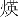

研究会プログラム
| 12月11日(金) |
| 開会の挨拶 | 10:00〜10:05 | 六甲ホール |
| ショートプレゼンテーションI-A | 10:05〜10:50 | 六甲ホール |
| チュートリアル講義 | 11:05〜12:35 | 六甲ホール |
| TL-1 | 半導体の光物性 −励起子研究の歩み− | ||
|
中山正昭 | ||
| 阪市大院・工学 | |||
| 特別講演 | 13:55〜14:55 | 六甲ホール |
| OL-2 | ナノカーボン・原子層物質における光物性とその応用 | ||
|
松田一成 | ||
| 京都大・エネルギー理工学研 | |||
| ショートプレゼンテーションI-B | 15:10〜16:00 | 六甲ホール |
| ポスター発表 I A | 16:00〜17:40 | 2階ホワイエ |
| I A-3 | Cu2O薄膜結晶の発光スペクトルとその偏光依存性 | ||
| 郡司昂弥, 相原慎吾, 市川聡夫, 赤井一郎A | |||
| 熊本大院・自然科学, A熊本大・パルス研 | |||
| I A-4 | PbI2マイクロキャビティにおける励起子ポラリトン特性 | ||
| 大河原 豊, 中山正昭 | |||
| 阪市大院・工学・電子情報系専攻 | |||
| I A-5 | MgO基板に挟まれたCu2O薄膜における吸収スペクトルのベイズ推定 | ||
| 岩満一功, 相原慎吾A, 岡田真人B,C, 赤井一郎D | |||
| 熊本大・理学, A熊本大院・自然科学, B東京大院・新領域創成科学, C理研・脳科学総合研究セ, D熊本大・パルス研 | |||
| I A-6 | Hot Wall法でAl2O3基板上に成膜したBiI3薄膜の速度依存性 | ||
| 坂本隆太, 岩満一功A, 相原慎吾, 市川聡夫, 島本知茂B, 赤井一郎B | |||
| 熊本大院・自然科学, A熊本大・理学, B熊本大・パルス研 | |||
| I A-7 | CuBrマイクロキャビティにおけるポラリトン凝縮状態でのポラリトン分散関係 | ||
|
植田誠史, 中山正昭 | ||
| 阪市大院・工学・電子情報系 | |||
| I A-8 | シアニン色素J-会合体を含む1次元フォトニック結晶におけるAC-シュタルク三重項の色素濃度依存性 | ||
| 鈴木 信, 坂田智裕, 川中智大, 上村 忍, 宮川勇人, 中西俊介, 鶴町徳昭 | |||
| 香川大院・工学・材料創造工学 | |||
| I A-9 | Na蒸気を用いたN型共鳴における信号波形とac Starkシフト | ||
| 播广屋和貴, 司城宏太朗, 光永正治 | |||
| 熊本大院・自然科学 | |||
| I A-10 | 光渦照射による量子ホール電子系の伝導度変化〜カイラリティを持つ光と電子状態との相互作用を探る〜 | ||
|
矢ヶ崎慶, 音 賢一, 三野弘文 | ||
| 千葉大院・理学・物理学 | |||
| I A-11 | 誘電体球上に配置した多粒子における超蛍光の解析 | ||
| 小田切和喜, 余越伸彦, 石川 陽A, 石原 一 | |||
| 阪府大院・工学, A山梨大・工学・先端材料理工 | |||
| I A-12 | 離調共振器中の二準位系の上方変換的な協力放射 | ||
| 畑 遼介, 余越伸彦, 安食博志A, 石原 一 | |||
| 阪府大院・工学, A阪大・光科学セ | |||
| I A-13 | 分子間相関を考慮したアンテナ増強2光子上方変換 | ||
| 逢坂良樹, 余越伸彦, 石原 一 | |||
| 阪府大院・工学 | |||
| I A-14 | 1次元配列した金ナノ微粒子のSHG顕微法による観察と FDTD計算による解析 | ||
| 久保田景輔A, 宮内良広A, 日下実沙子B, 鈴木隆則A,C, 北島正弘A,C,D, 島田 透 B | |||
| A防衛大・応用物理, B弘前大・教育, C横浜国立大院・工学, Dルクスレイ | |||
| I A-15 | 金ナノ微粒子-ステアリン酸混合単分子LB膜の作成と 赤外分光法(FTIR)による解析 | ||
| 松田勇輝A, 宮内良広A, 鈴木隆則A,B, 梅村泰史C | |||
| A防衛大・応用物理, B横浜国立大院・工学, C防衛大・応用化学 | |||
| I A-16 | 金属ナノ構造体を用いたプラズモン光マニピュレーションの輻射力理論-非線形光学効果- | ||
| 保科政幸, 余越伸彦, 石原 一 | |||
| 阪府大院・工学 | |||
| I A-17 | 金ナノ粒子−マイクロ粒子混合系における レーザー光誘起集合化 | ||
| 宮井 萌, 西村勇姿, 床波志保A, 飯田琢也 | |||
| 阪府大院・理学, A阪府大院・工学 | |||
| I A-18 | 金ナノ粒子複合体の自己組織的周期構造における光応答の理論解析 | ||
| 吉川貴康A, 内田多佳子B, 田村守A,B, 井村考平B, 飯田琢也A | |||
| A阪府大院・理学系, B早稲田大院・先進理工学, C阪府大院・工学 | |||
| I A-19 | Eu, Ce, あるいはCuをドープしたCsCaCl3焼結体の輝尽蛍光特性 | ||
| 野田沙矢佳, 佐伯啓一郎, 越水正典, 藤本 裕, 柳田健之A, 浅井圭介 | |||
| 東北大・工, A奈良先端大 | |||
| I A-20 | 周期駆動1次元Friedrichsモデルにおけるvirtual cloudの実粒子転換と光放出プロセス | ||
| 山根秀勝A, 山田修久A, トミオ・ペトロスキーB,C, 田中 智A | |||
| A阪府大院・理学系・物理科学, Bテキサス大・オースチン校複雑量子系セ, C東京大・生産技術研 | |||
| ポスター発表 I B | 16:00〜17:40 | 2階ホワイエ |
| I B-21 | シリコンナノ結晶塗布薄膜の光電流特性 | ||
| 佐々木誠仁, 加納伸也, 杉本 泰, 今北健二, 藤井 稔 | |||
| 神戸大院・工学・電気電子工学 | |||
| I B-22 | シリコンナノ結晶ソリッドにおけるナノ結晶間エネルギー移動 | ||
| 古田健太, 杉本 泰, 今北健二, 藤井 稔 | |||
| 神戸大院・工 | |||
| I B-23 | CdTeナノ粒子単層膜の光学特性 | ||
| 大城一馬, 金 大貴 | |||
| 阪市大院・工学・電子情報系 | |||
| I B-24 | 水熱合成法によるCuInS2 ナノ粒子の作製 | ||
| 飯田和貴, 横田裕樹, 夫 恒範, 金 大貴 | |||
| 阪市大院・工学・電子情報系 | |||
| I B-25 | 水熱合成法で作製したCdTeナノ粒子の時間分解発光測定 | ||
|
飯高匡展, 李  信A, 金 大貴A, 三野弘文B |
|||
| 千葉大院・教育学, A阪市大院・工学, B千葉大・普遍教育セ | |||
| I B-26 | Eu添加SrCO3セラミックのシンチレーション特性評価 | ||
| 中内大介, 岡田 豪, 柳田健之 | |||
| 奈良先端大学院大・物質創成科学 | |||
| I B-27 | Ce添加リン酸塩ガラスのシンチレーションおよびドシメータ特性 | ||
| 辰巳浩規, 岡田 豪, 柳田健之, 正井博和A | |||
| 奈良先端大学院大・物質創成科学, A京都大・化学研 | |||
| I B-28 | 透明セラミックおよび単結晶MgOのドシメーター特性 | ||
| 加藤 匠, 岡田 豪, 柳田健之 | |||
| 奈良先端大学院大・質創成科学 | |||
| I B-29 | 希土類添加NaPO3-Al(PO3)3ガラスのシンチレーション特性比較 | ||
| 久良智明, 柳田健之, 岡田 豪, 藤本 裕A, 正井博和B | |||
| 奈良先端大学院大・物質創成科学, A東北大・工学, B京都大・化学研 | |||
| I B-30 | 近赤外発光シンチレータとしてのNd-Ce共添加Lu3Al5O12の特性評価 | ||
| 大矢智久, 岡田 豪, 柳田健之 | |||
| 奈良先端大学院大・物質創成科学 | |||
| I B-31 | BiFe0.5Co0.5O3薄膜結晶における光による電子状態制御 | ||
| 成瀬 卓A, 沖本洋一A, 馬ノ段月果A, 深谷 亮B, 野澤俊介B, 腰原伸也 A,C, 石川忠彦 A, 清水啓佑 D, 北條 元 D, 東 正樹 D | |||
| A東工大院・理工, BKEK, CJST-CREST, D東工大・応セラ研 | |||
| I B-32 | 反強磁性体Cr2O3における電場誘起磁化 | ||
| 新海貴大, 鈴木崇平A, 守安 毅, 河本敏郎 | |||
| 神戸大院・理, A神戸大・理 | |||
| I B-33 | Cd0.8Mn0.2Teにおける高密度励起子磁気ポーラロンの非線形発光メカニズム | ||
| 平瀬貴博, 長田雅海, 宮島顕祐 | |||
| 東京理科大院・理学・応用物理学 | |||
| I B-34 | カルバゾールジシアノベンゼン系TADF材料の発光特性に及ぼす高次の三重項励起状態の影響 | ||
| 長谷山翔太A, 高木絢生A, 丹羽顕嗣A, 小林隆史A,B, 永瀬 隆A,B, 合志憲一 C,D, 安達千波矢 C,D, 内藤裕義 A,B | |||
| A阪府大院・工学・電子数物系, B阪府大・RIMED, C九州大・OPERA, D九州大・JST-ERATO安達分子エキシトン工学プロジェクト | |||
| I B-35 | ダブルパルス照射下でのシアニン分子薄膜の励起子応答 | ||
| 長内順平, 小島 磨, 喜多 隆, 沈 用球A | |||
| 神戸大院・工学, A阪府大院・工学 | |||
| I B-36 | 赤色発光材料白金錯体の発光過程 | ||
| 田中恵崇, 大畠慶三, 秋元郁子, 川端温子, 大須賀秀次, 坂本英文 | |||
| 和歌山大院・システム工学 | |||
| I B-37 | ジアセチレン結晶における低周波数ラマン散乱スペクトルの温度依存性 | ||
| 林 真理, 伊東千尋 | |||
| 和歌山大院・システム工学 | |||
| I B-38 | 励起子分子から同軸上に生成された光子対における周波数相関 | ||
| 清水 颯, 大畠悟郎, 山本康男, 溝口幸司 | |||
| 阪府大院・理 | |||
| I B-39 | GaAs/AlAsタイプII超格子における電子・正孔プラズマから電子・正孔液滴への動的転移 | ||
|
古川喜彬, 中山正昭 | ||
| 阪市大院・工学・電子情報系 | |||
| I B-40 | Me4P[Pt(dmit)2]2 の光誘起相転移ダイナミクス | ||
| 塩沼健太A, 石川忠彦A, 恩田健A,B, 沖本洋一A, 腰原伸也A,C, 羽田真毅 B,D,E, Sercan Keskin E, Stuart A. Hayes E, Gaston Corthey E, R.J. Dwayne Miller E, 山本 貴 F, 野村光城 G, 加藤礼三 G | |||
| A東工大院・理工, BJST-さきがけ, CJST-CREST, D岡山大, EMax Plank物質構造ダイナミクス研, F愛媛大・理工, G理研 | |||
| 交流会 | 18:00〜19:00 | 瀧川記念学術交流会館 |
| 12月12日(土) |
| ショートプレゼンテーションII-A, II-B | 9:00〜10:30 | 六甲ホール |
| ポスター発表 II A | 10:30〜12:10 | 2階ホワイエ |
| II A-41 | 有機無機層状ペロブスカイト型半導体微小共振器の作成とその光学特性 | ||
| 朝日敏夫, 古川雅文, 吉田明弘, 河瀬広樹, 阪東一毅A, 近藤久雄 | |||
| 愛媛大院・理工学, B静岡大院・理学 | |||
| II A-42 | 薄膜における励起子-光結合状態: 励起子準位が複数ある場合への拡張 | ||
| 野上岳志 , 安食博志A | |||
| 阪大院・基礎工学, A阪大・光科学セ | |||
| II A-43 | 光トラップ下における微小球光共振器作製 | ||
|
豊田侑助, 蓑輪陽介, 芦田昌明 | ||
| 阪大院・基礎工 | |||
| II A-44 | エネルギー移動によるシアニン分子薄膜の励起 | ||
| 伊藤由佳子, 小島 磨, 喜多 隆, 沈 用球A | |||
| 神戸大院・工学, A阪府大院・工学 | |||
| II A-45 | 低ダメージスパッタリングカソードを用いた酸化、窒化ジルコニウム薄膜の作成 | ||
|
古澤将司, 石井裕樹, 加藤大輝, 岩田 寛, 関谷隆夫, 田中正俊 | ||
| 横浜国立大院・工学 | |||
| II A-46 | 無添加CsCaCl3及びCsSrCl3結晶シンチレータの発光特性 | ||
| 藤本 裕, 佐伯啓一郎, 柳田健之A, 越水正典, 浅井圭介 | |||
| 東北大, A奈良先端大学院大 | |||
| II A-47 | 放電プラズマ焼結法により作製したSrF2添加AlNセラミックスのシンチレーション及びドシメータ特性 | ||
| 小島香織, 岡田 豪, 福田健太郎A, 柳田健之 | |||
| 奈良先端大学院大・物質創成科学, A（株）トクヤマ | |||
| II A-48 | Ce3+添加YAGG, GAGG, LuAGG透明セラミックスの シンチレーション特性研究 | ||
| 森 正樹, 許 健, 岡田 豪, 柳田健之, 上田純平A, 田部勢津久A | |||
| 奈良先端大学院大・物質創成科学, A京都大院・人間環境学 | |||
| II A-49 | リチウムガラスシンチレータにおける励起密度効果 | ||
| 越水正典, 岩松和宏A, 倉島 俊B, 田口光正B, 木村 敦B, 柳田健之 C, 藤本 裕, 浅井圭介 | |||
| 東北大院・工, ANotre Dame大, B原子力機構, C奈良先端大 | |||
| II A-50 | 2価陽イオン共添加Ce:(Gd, La)2Si2O7単結晶の シンチレーション特性 | ||
| 村上力輝斗A, 黒澤俊介B, 庄子育宏A,C, 横田有為B, Jan Pejchal D, 大橋雄二 A, 鎌田 圭 B,C, 吉川 彰 A,B,C | |||
| A東北大・金属材料研, B東北大・NICHe, C株式会社CA, Dチェコ物理研 | |||
| II A-51 | (114)GaAs/Al0.3Ga0.7As単一量子井戸構造における自由励起子発光の立ち上がり時間に対する励起 子―音響フォノン散乱効果 | ||
|
大野達也, 古川喜彬, 下村 哲A, 中山正昭 | ||
| 阪市大院・工学・電子情報系, A愛媛大院・理工学・電子情報工学 | |||
| II A-52 | GaAs/AlAs多重量子井戸構造における励起子―電子非弾性散乱による発光特性 | ||
|
中西沙絵佳, 古川喜彬, 中山正昭 | ||
| 阪市大院・工学・電子情報系 | |||
| II A-53 | In0.53Ga0.47As/In0.53Al0.47As多重量子井戸におけるg因子の温度依存 性 | ||
| 奥村朗人, 森田 健, 石谷善博, 北田貴弘A, 井須俊郎A | |||
| 千葉大院・工学・人工システム科学, A徳島大院・フロンティア研究セ | |||
| II A-54 | 励起子量子ビートの振幅に対する励起子線幅の効果 | ||
| 小島 磨, 喜多 隆 | |||
| 神戸大院・工学 | |||
| II A-55 | 空間分解発光測定によるInGaN/GaN多重量子井戸の動的遮蔽効果の研究 | ||
| 寺尾顕一A, 吉川尚孝A, Dmitry TurchinovichB, 田中耕一郎A,C | |||
| A京大院・理, Bマックスプランク研, C京大・iCeMS | |||
| II A-56 | ベイズ推定を用いたコヒーレントフォノン信号解析 | ||
| 濱本真由美, 相原慎吾, 岩満一功A, 岡田真人B,C, 赤井一郎D | |||
| 熊本大院・自然科学, A熊本大・理学, B東京大院・新領域創成科学, C理所・脳科学総合研究セ, D熊本大・パルス研 | |||
| II A-57 | Sm価数変化を用いたX線計測およびマイクロビーム放射線治療への応用 | ||
| 岡田 豪, George BelevA, 上田純平B, 田部勢津久B, Cyril Koughia C, Dancho Tonchev C, Farley Chicilo C, 柳田健之, Tomasz Wysokinski A, Dean Chapman A, Andy Edgar D, Safa Kasap C | |||
| 奈良先端大学院大・物質創成科学, A カナディアンライトソース, B 京都大院・人間環境学, Cサスカチュワン大 電気情報工学, Dヴィクトリア大ウェリントン校 | |||
| II A-58 | 内殻光吸収スペクトルを通してみる指数崩壊過程における境界条件の効果 | ||
| 福田 拓A, サバンナ・ガーモンA, トミオ・ペトロスキーB,C, 田中 智A | |||
| A阪府大院・理学・物理科学, Bテキサス大・オースチン校・複雑量子系セ, C東京大・生産技術研 | |||
| ポスター発表 II B | 10:30〜12:10 | 2階ホワイエ |
| II B-59 | テラヘルツ時間領域分光によるCoOの内部エネルギー温度依存性の測定 | ||
| 立松雅大, 守安 毅, 岸本秀隆A, 河本敏郎 | |||
| 神戸大院・理, A神戸大・理 | |||
| II B-60 | テラヘルツ時間領域分光法を用いたSiの光励起キャリアダイナミクス | ||
| 南部正裕, 守安 毅, 河本敏郎 | |||
| 神戸大院・理 | |||
| II B-61 | THz時間領域分光法を用いた金属カットワイヤメタマテリアルの透過特性解析 | ||
| 豊島 史, 谷口雅輝, 岡部京介, 下川房男, 中西俊介, 鶴町徳昭 | |||
| 香川大院・工学 | |||
| II B-62 | 面内配向TPCO単結晶微小共振器における光子‐励起子相互作用の評価 | ||
| 後藤 要, 山下兼一, 山雄健史, 堀田 収, 柳 久雄A, 佐々木史雄B | |||
| 京都工芸繊維大, A奈良先端大学院大・物質創成科学, B産業技術総合研・電子光技術 | |||
| II B-63 | CARS分光法を用いた乾燥過程における固体高分子電解質膜中の水 のOH伸縮振動スペクトルの解析 | ||
| 東海林篤, 酒井 優A, 原 正則B, 松島永佳C, 犬飼潤治B | |||
| 山梨大クリスタル研, A山梨大院, B山梨大燃料電池ナノ材料研究セ, C北大工 | |||
| II B-64 | ZnO薄膜中の高速輻射緩和する光−励起子結合モードの短パルス励起 | ||
| 木下 岳A, 一宮正義B,C, 芦田昌明C, 石原 一A | |||
| A阪府大院・工学, B滋賀県立大・工学, C阪大院・基礎工学 | |||
| II B-65 | i-GaAs/n-GaAsエピタキシャル構造におけるコヒーレントLOフォノン- プラズモン結合モードからのテラヘルツ電磁波発生ダイナミクス | ||
|
住岡隆裕, 竹内日出雄, 中山正昭 | ||
| 阪市大院・工学・電子情報系専攻 | |||
| II B-66 | 有機結晶微小共振器における活性層厚の単分子層揺らぎの観測 | ||
| 大塚和仁, 外山直希, 阪東一毅, 近藤久雄A | |||
| 静岡大・理学・物理, A愛媛大院・理工学 | |||
| II B-67 | β-Ga2O3単結晶における自己束縛励起子の安定性の評価 | ||
|
山岡 優, 中山正昭 | ||
| 阪市大院・工学・電子情報系 | |||
| II B-68 | モンテカルロ法に基づく半導体量子井戸中スピン偏極のフォノン散乱を考慮した空間マッピング | ||
| 黒澤亮太, 森田 健, 好田 誠A, 石谷善博 | |||
| 千葉大院・工学・人工システム科学, A東北大院・工学・知能デバイス材料学 | |||
| II B-69 | 高純度ダイヤモンド単結晶における励起子拡散のメカニズム | ||
| 森本 光A, 挾間優治A, 田中耕一郎A,B, 中 暢子A | |||
| A京都大院・理学, B京都大・物質ー細胞統合システム拠点 | |||
| II B-70 | CdTeナノ粒子3次元周期配列構造における量子共鳴 | ||
| 渡辺太一, 冨田昇吾, 大城一馬, I-Ya ChangA,B, 金 賢得A,B, 金 大貴 | |||
| 阪市大院・工学・電子情報系, A京都大院・理学・化学, BJST・さきがけ | |||
| II B-71 | Atomic Layer Depositionによる誘電体多層膜粒子の作製及び光の状態密度制御 | ||
|
尾嵜友亮, 今北健二, 藤井 稔 | ||
| 神戸大院・工学・電気電子工学 | |||
| II B-72 | CuCl量子ドット中の励起子分子励起状態のドットサイズ依存性 | ||
| 橋本優吾, 菅原雅弘, 坂庭健史, 宮島顕祐 | |||
| 東京理科大院・理学・応用物理学 | |||
| II B-73 | Alドープanatase型二酸化チタン単結晶における永続的紫外光誘起キャリアの挙動 | ||
|
田辺裕亮A, 加藤光太A, 関谷隆夫A,B, 小平哲也B | ||
| A横浜国立大院・工学, B産業技術総合研・化学プロセス | |||
| II B-74 | 有機無機励起共鳴π共役系リガンド - ZnSe/CdSeナノ粒子複合体の 光学特性評価 | ||
| 矢幅 拓真, 改田 茂, 越水正典, 藤本 裕, 浅井圭介 | |||
| 東北大院・工学・応用化学 | |||
| II B-75 | 二酸化チタンanatase型単結晶におけるドリフト移動度 | ||
|
木村祐紀, 笠森浩平, 山口 裕, 関谷隆夫 | ||
| 横浜国立大院・工学 | |||
| II B-76 | 有機強誘電体の高速光応答ダイナミクス | ||
|
馬ノ段月果A, 沖本洋一A, 田中誠一A, 成瀬卓A, 石川忠彦A, 恩田健 A,B, 腰原伸也 A,C, 堀内佐智雄 C,D | ||
| A東工大院・理工, BJST-PRESTO, CJST-CREST, D産総研 | |||
| ショートプレゼンテーションIII-A, III-B | 13:20〜14:55 | 六甲ホール |
| ポスター発表 III A | 14:55〜16:35 | 2階ホワイエ |
| III A-77 | 励起エネルギー移動における非マルコフ的緩和過程の影響 | ||
| 平吹拓也, 石原 一 | |||
| 阪府大院・工 | |||
| III A-78 | 時間分解光子相関解析による単一ナノ発光材料の物性研究 | ||
| 井原章之, 佐藤良太, 寺西利治, 金光義彦 | |||
| 京都大・化学研 | |||
| III A-79 | Type-I及びType-II型CdTeナノ粒子の作製と光学特性 | ||
| 伊藤達也, 金 大貴 | |||
| 阪市大院・工学 | |||
| III A-80 | NaCl単結晶中のCuCl量子ドットのサイズ及び構造解析 | ||
| 井藤 拳, 赤津達郎, 宮島顕祐 | |||
| 東京理科大院・理学・応用物理学 | |||
| III A-81 | ローダミンBで被覆したCdSeナノ半導体ナノ粒子と光学特性評価 | ||
|
大野洋人, 矢幅拓真A, 越水正典A, 藤本 裕A, 浅井圭介A | ||
| 東北大・工学, A東北大院・工学 | |||
| III A-82 | 単一CdSeTe/ZnSナノ粒子における発光の強度相関測定 | ||
| 広重 直, 井原章之, 金光義彦 | |||
| 京都大・化学研 | |||
| III A-83 | 時間分解光電子顕微鏡を用いたグラフェン中のキャリアダイナミクスのイメージング | ||
| 櫻井 健A, 福本恵紀A,B*, 恩田 健A,C, 腰原伸也A,B | |||
| A東京工業大院・理工学, BJST-CREST, CJST-PRESTO | |||
| III A-84 | 共焦点ラマン散乱顕微鏡システムによる単層カーボンナノチューブの軟X誘起欠陥の解析 | ||
|
泉本征憲, 磯崎 哲, 村上俊也, 木曽田賢治A, 伊東千尋 | ||
| 和歌山大・システム工学, A和歌山大・教育・理科教育 | |||
| III A-85 | 励起子光シュタルク効果の観測へ向けたピコ秒過渡反射光学系の設計 | ||
| 廣瀬丈也, 宮島顕祐 | |||
| 東京理科大院・理学・応用物理学 | |||
| III A-86 | 液晶可変リターダーを用いた広帯域における高感度偏光スペクトル計測システムの開発 | ||
| 飯田 亮, 三野弘文A | |||
| 千葉大・教育, A千葉大・普遍教育セ | |||
| III A-87 | 超高真空SFG顕微鏡によるステップバンチしたSi(111):H表面の観察 | ||
| 青木智秀, Md.Abdus Sattar, Khuat Thi Thu Hien, 水谷五郎, Harvey N. RuttA | |||
| 北陸先端大学院大・マテリアルサイエンス, A School of Electronic and Computer Science, University of Southampton | |||
| III A-88 | 共焦点光和周波顕微鏡による指紋の観察 | ||
| 塚田哲人, 興山 渉, Khuat Thi Thu Hien, 水谷五郎 | |||
| 北陸先端大学院大・マテリアルサイエンス | |||
| III A-89 | Nonlinear optical interferometry study at the interface of organic thin films with indium tin oxide | ||
| Muhammad Samir UllahA,C, Siti Zulaikha Ngah DemonE, Kazuki Matsumoto A, Yoshihiro Miyauchi D, Khuat Thi Thu Hien A, Goro Mizutani A, Harvey Rutt B | |||
| AJapan Advanced Institute of Science and Technology, BUniversity of Southampton, CBangladesh University of Engineering and Technology, DNational Defense Academy of Japan, ENational Defense University of Malaysia | |||
| III A-90 | Dielectric-loaded surface plasmon polaritonによる配向多結晶ZnO薄膜のSHG増強 | ||
|
北尾明大, 今北健二, Kang Byung Jun, 藤原裕大, 藤井 稔 | ||
| 神戸大院・工学・電気電子工学 | |||
| III A-91 | 単層WSe2の偏光分解共鳴ラマン分光 | ||
| 草場 哲A, 吉川尚孝A,B, 田中耕一郎A,B | |||
| A京都大院・理学・物理学・宇宙物理学, B京都大・物質-細胞統合システム拠点 | |||
| III A-92 | アンドープGaAs/n-type GaAs構造におけるコヒーレントLOフォノンのテラヘルツ分光: ラマン散乱分光との比較 | ||
| 竹内日出雄, 住岡隆祐, 中山正昭 | |||
| 阪市大院・工学・電子情報系・応用物理学 | |||
| III A-93 | M字型光学系を利用したチェレンコフテラヘルツパルス発生 | ||
| 塩澤建人, 森田 健, 石谷善博 | |||
| 千葉大院・工学・人工システム科学 | |||
| III A-94 | 数サイクルTHzパルスによる結合量子井戸 2準位系のコヒーレント過渡応答 | ||
| 岡田宏生, 永井正也, 芦田昌明, 関根徳彦A, 寳迫 巌A | |||
| 阪大院・基礎工学, A情報通信研究機構 | |||
| III A-95 | Terahertz wave radiation under exciton resonant excitation conditions in a GaAs/AlAs multiple quantum well | ||
| Y. Tarui, O. Kojima, T. Kita, A. MajeedA, P. IvanovA, E. Clarke A, R. Hogg A,B | |||
| Kobe University, AUniversity of Sheffield, BUniversity of Glasgow | |||
| ポスター発表 III B | 14:55〜16:35 | 2階ホワイエ |
| III B-96 | ヨウ化ストロンチウムシンチレータ結晶の大型化と発光特性 | ||
| 黒澤俊介A, 横田有為A, 庄子育宏B,C, 長門久和C, 早坂将輝C, 大橋雄二 B, 鎌田 圭 A,C, 吉川彰 A,B,C | |||
| A東北大・NICHe, B東北大・金研, CCA | |||
| III B-97 | Tl添加CsCaCl3結晶の蛍光及びシンチレーション特性 | ||
| 佐伯啓一郎, 越水正典, 藤本 裕, 柳田健之A, 浅井圭介 | |||
| 東北大院・工学・応用化学, A奈良先端大学院大・物質創生科学 | |||
| III B-98 | 磁性半導体における励起子及び正孔スピンのg因子の導出 | ||
| 上村翔太, 土家琢磨A, 三野弘文B | |||
| 千葉大院・理学, A北海道大院・工学, B千葉大・普遍教育セ | |||
| III B-99 | リン酸塩ガラスにおけるラジオフォトルミネッセンス及び フォトルミネッセンス特性のリン酸塩組成依存性 | ||
| 田中宏典, 藤本 裕, 越水正典, 柳田健之A, 浅井圭介 | |||
| 東北大院・工, A奈良先端大 | |||
| III B-100 | 単層カーボンナノチューブのアップコンバージョン発光 | ||
|
青田 駿A, 秋月直人A, 毛利真一郎A, 松田一成A, 宮内雄平A,B | ||
| A京都大・エネルギー理工学研, BJSTさきがけ | |||
| III B-101 | Lu2Si2O7シンチレータ結晶のYb置換効果とその発光特性 | ||
| 堀合毅彦A, 黒澤俊介B, 村上力輝斗A, 山路晃広A, 庄子育宏A,C, 大橋雄二 A, Pejchal Jan D, 鎌田 圭 B,C, 横田有為 B, 吉川 彰 A,B,C | |||
| A東北大・金属材料研, B東北大・未来科学技術共同研究セ, C株式会社CA, Dチェコ物理研 | |||
| III B-102 | フェムト秒域時間分解光電子分光法と三温度モデル解析によるグラフェンの超高速キャリアダイナミクスの研究 | ||
|
染谷隆史, 吹留博一A, 渡邊 浩, 山本貴士, 岡田 大, 鈴木博人B, 飯盛拓嗣, 石井順久, 金井輝人, 田島圭佑 A, Baojie Feng, 山本 達, 板谷治郎, 小森文夫, 岡崎浩三, 辛 埴, 松田 巌 | ||
| 東京大・物性研, A東北大・電気通信研, B東京大・理学系・物理学 | |||
| III B-103 | Growth and luminescence propertirs of Ce doped LaCl3/CaCl2 eutectic scintillator | ||
| Kei KamadaA,B, Kosuke HishinumaC, Yasuhiro ShojiB,C, Shunsuke Kurosawa A,C, Akihiro Yamaji C, Yuui Yokota A,Yuji Ohashi C, Akira Yoshikawa A,B,C | |||
| ANICHe, Tohoku Univ., BCA corp., CIMR, Tohoku Univ | |||
| III B-104 | フェムト秒パルスレーザー励起による光第二次高調波顕微鏡を用いたサクラン繊維とサクラン薄膜の観察 | ||
| 趙 越, Khuat Thi Thu Hien, 水谷五郎, Harvey N. RuttA, Kittima Amornwachirabodee, 岡島麻衣子, 金子達雄 | |||
| 北陸先端大学院大・マテリアルサイエンス, ASchool of Electronic and Computer Science, University of Southampton | |||
| III B-105 | 異なるバンドギャップエネルギーを持つInAs-QDを用いた中間バンド型GaAs太陽電池の特性比較 | ||
| 池田理彩, 林 佑真, 尾崎信彦, 大里啓孝A, 渡辺英一郎A, 池田直樹A, 杉本喜正A | |||
| 和歌山大・シス工, A物質・材料研究機構 | |||
| III B-106 | 量子ドット中間バンド型太陽電池におけるキャリアの長寿命化と2段階光電流生成の増強 | ||
|
朝日重雄, 寺西陽之, 笠松直史, 加田智之, 海津利行, 喜多 隆 | ||
| 神戸大院・工学・電気電子工学 | |||
| III B-107 | 鉛ハライドペロブスカイト太陽電池の特性劣化メカニズム | ||
| 半田岳人, 岡野真人, 阿波連知子, 若宮淳志, 金光義彦 | |||
| 京都大・化学研 | |||
| III B-108 | 時間分解2光子励起発光顕微分光によるCH3NH3PbBr3単結晶の光キャリア拡散・再結 合の研究 | ||
| 山田琢允, 山田泰裕A, 中池由美, 若宮淳志, 金光義彦 | |||
| 京都大・化学研, A千葉大院・理学 | |||
| III B-109 | CuCl薄膜の高品質化とその光学的品質の評価 | ||
| 中村清孝A, 松田拓也B, 新井祐基A, 一宮正義A,C, 石原 一B, 芦田昌明 C, 柳澤淳一 A | |||
| A滋賀県立大院・工学, B阪府大院・工学, C阪大院・基礎工学 | |||
| III B-110 | 多孔性配位高分子中における水分子の赤外分光 | ||
|
市井智章A, 有川 敬A, 佐藤弘志B, 北川 進C, 田中耕一郎A,C | ||
| A京都大・理, B東京大・工, C京都大・iCeMS | |||
| III B-111 | 超短パルス光照射されたシリコン単結晶薄膜における電子緩和と過渡的格子歪み | ||
| 長谷川尊之A,B,C, 松下龍樹A,B, 白石龍太郎A,B, 上田忠彌A,B, 田中義人 A,B,C | |||
| A兵庫県立大院・物質理学, B理研・放射光科学総合研究セ, C兵庫県立大・多重極限物質科学セ | |||
| III B-112 | 位相板を用いた円偏光THz時間領域分光法 | ||
|
森本智英, 山下元気, 永井正也, 芦田昌明 | ||
| 阪大院・基礎工学 | |||
| III B-113 | ZnO薄膜の発光スペクトルと縮退四光波混合スペクトル における光−励起子コヒーレント結合効果 | ||
|
佐伯 昴A, 松田拓也B, 一宮正義A,C, 木下 岳B, 石原 一B, 川上将輝 D, 中山正昭 D, 芦田昌明 A | ||
| A阪大院・基礎工, B阪府大院・工, C滋賀県立大・工, D阪市大院・工 | |||
| III B-114 | 光学スペクトル解析のベイズ的アプローチ | ||
| 相原慎吾, 郡司昂弥, 岩満一功A, 岡田真人B,C, 赤井一郎D | |||
| 熊本大院・自然科学, A熊本大・理学, B東京大院・新領域創成科学, C理研・脳科学総合研究セ, D熊本大・パルス研 | |||
Modified: 09 Nov, 2015